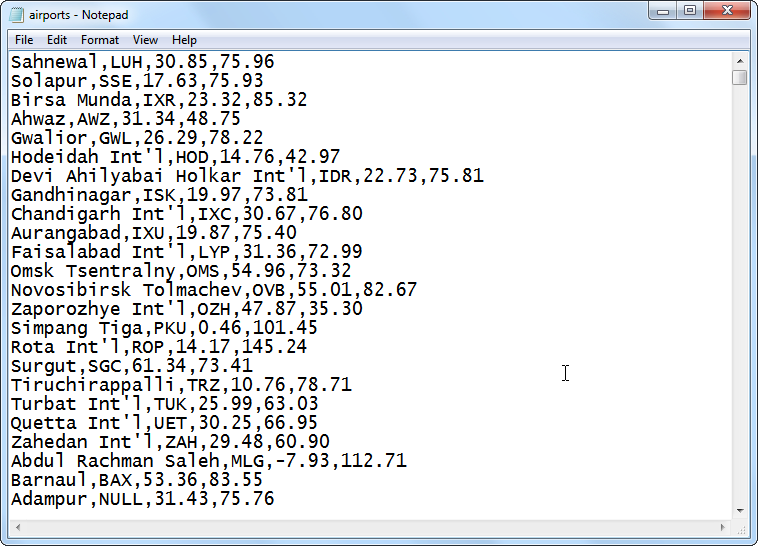
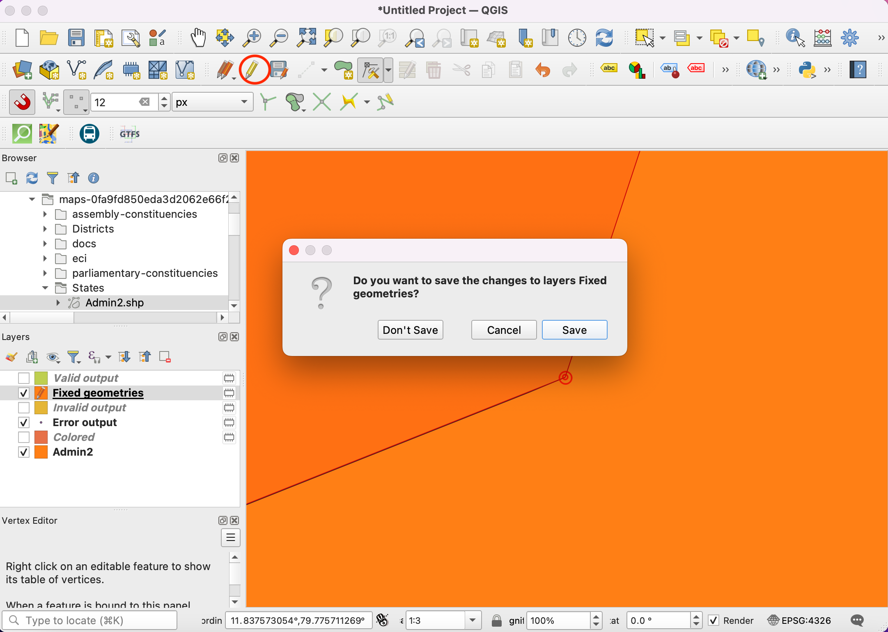
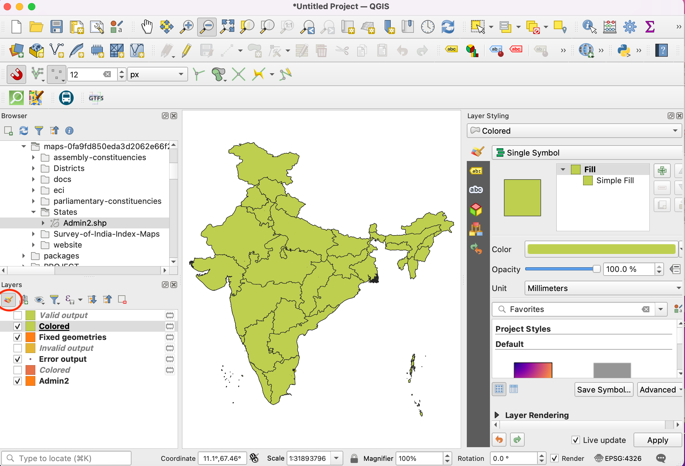
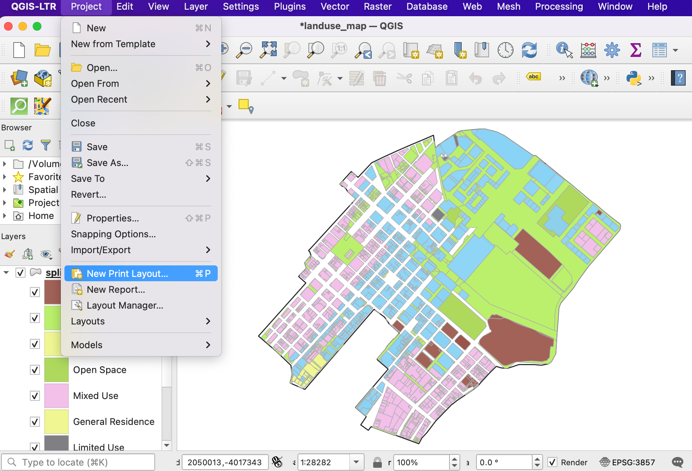
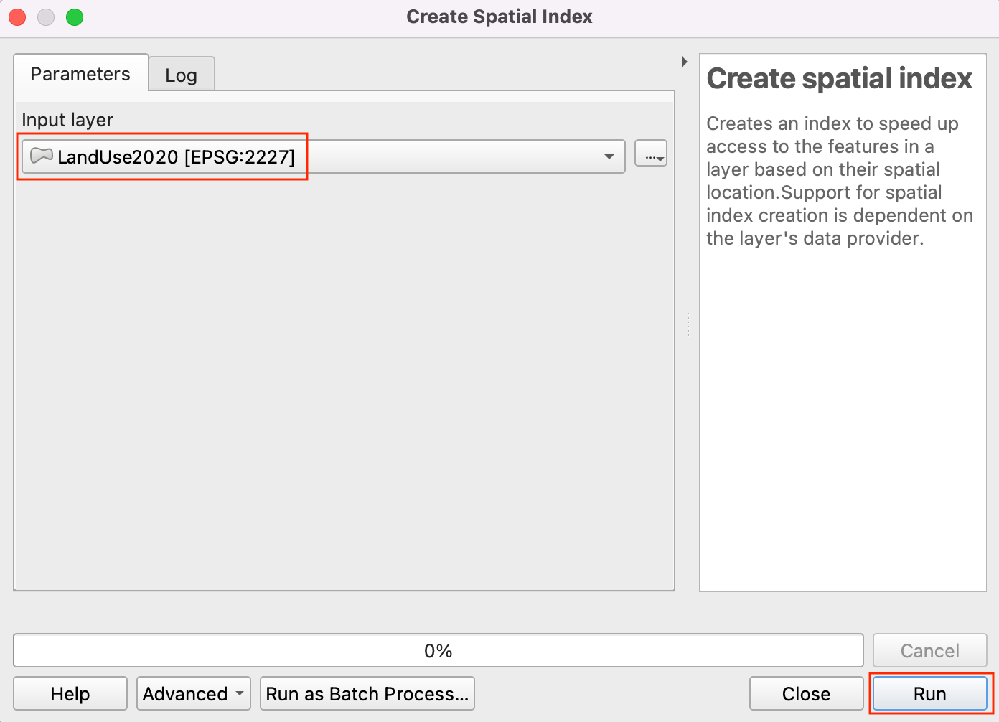

Iskanje najbližjega objekta z matriko izvor-destinacija (QGIS3)¶
V prejšnji vadnici, Osnove vizualizacije in usmerjanja omrežja (QGIS3), smo se naučili, kako zgraditi omrežje in izračunati najkrajšo pot med dvema točkama. To tehniko lahko uporabimo pri številnih različnih vrstah analiz, ki temeljijo na omrežju. Ena takih aplikacij je izračun matrike izvora in destinacije ali matrike OD. Če imamo množico izvornih točk in drugo množico ciljnih točk, lahko izračunamo najkrajšo pot med vsakim parom izvor-cilj in ugotovimo potovalno razdaljo/čas med njima. Takšna analiza je uporabna za iskanje najbližjega objekta do katere koli točke. Logistično podjetje lahko na primer uporabi to analizo za iskanje najbližjega skladišča svojim strankam, da bi optimiziralo dostavne poti. Tukaj uporabljamo algoritem Distance Matrix iz vtičnika QGIS Network Analysis Toolbox (QNEAT3) za iskanje najbližje zdravstvene ustanove vsakega naslova v mestu.
Opomba
V tej vadnici je prikazano, kako za izračun matrike izvora in destinacije uporabite lastne omrežne podatke. Če nimate lastnih omrežnih podatkov, lahko uporabite ORS Tools Plugin in algoritem za izvedbo podobne analize z uporabo podatkov OpenStreetMap. Če želite izvedeti, kako uporabljati vtičnik ORS Tools, glejte Analiza storitvenih območij z uporabo storitve Openrouteservice (QGIS3).
Pregled naloge¶
Vzamemo dva sloja za Washington DC - enega s točkami, ki predstavljajo naslove, in drugega s točkami, ki predstavljajo ustanove za duševno zdravje - in poiščemo ustanovo z najkrajšo potovalno razdaljo od vsakega naslova.
Druga znanja, ki se jih boste naučili¶
Izbor naključnega vzorca iz točkovnega sloja.
Uporabite virtualne sloje za izvajanje poizvedbe SQL na sloju QGIS.
Pridobivanje podatkov¶
Vlada okrožja Columbia prosto deli na stotine podatkovnih nizov na portalu Open Data Catalog.
Prenesite naslednje podatkovne sloje kot shapefile.
Zaradi priročnosti lahko kopijo zbirk podatkov neposredno prenesete s spodnjih povezav:
Adult_Mental_Health_Providers.zip
Vir podatkov: [DCOPENDATA]
Nastavitve¶
Obiščite . Izberite Vse Poiščite vtičnik QNEAT3 in ga namestite. Kliknite Close.

Postopek¶
Na plošči Browser poiščite preneseno datoteko
Roadway_Block-shp.zip. Razširite jo in povleciteRoadway_Block.shpdatoteko na delovno površino. Podobno poiščite datotekoAdult_Mental_Health_Providers.zip, razširite jo in jo dodajte na platno (Adult_Mental_Health_Providers.shp).

Nato poiščite datoteko
Address_Points.zip, razširite jo in dodajte datotekoAddress_Points.shp. Po mestu boste videli boste veliko točk. Vsaka točka predstavlja veljavni naslov. Naključno bomo izbrali 1000 točk. Ta tehnika se imenuje naključno vzorčenje. Pojdite v .

Poiščite in najdite algoritem .

Izberite
Address_Pointskot Input layer,Number of featurekot Method in vnesite1000v Number/percentage of features. V polju Extracted (random) izberite...in kliknite Save to a file. Zdaj izberite imenik in vnesite ime kotaddress_point_subset.shpter kliknite Run

Opomba
Ker bo algoritem iz danega nabora podatkov pridobil 1000 naključnih točk, lahko za ponovitev vaje, tu uporabljenih točk, prenesete datoteko nabora, ki smo jo dobili med izvajanjem algoritma, tukaj address_point_subset.zip . Po prenosu naložite sloj address_point_subset.shp v QGIS.
Na ploščo Layers bo dodan nov sloj
address_point_subset, prikaz slojaAddress_Pointsnaslovnih točk lahko izklopite.

Z desno tipko miške kliknite na sloj
address_point_subsetin izberite Rename layer.

Preimenujmo ta sloj v
origin_points. Podobno preimenujmo plastAdult_Mental_Health_Providers, ki predstavlja zdravstvene ustanove, vdestination_points. Tako poimenovanje slojev olajša njihovo prepoznavanje pri nadaljnji obdelavi.

Poiščite algoritem . Če tega algoritma ne vidite v orodjarni, se prepričajte, da ste namestili vtičnik QNEAT3.

Ta algoritem pomaga poiskati razdalje skupaj z omrežjem med izbranima izvornim in ciljnim slojem. Izberite
Roadway_Blockkot Mrežni sloj. Izberiteorigin_pointskot sloj From-Points inOBJECTID_1kot polje Unique Point ID. Podobno nastavitedestination_pointskot To-Points Layer inOBJECTIDkot Unique Point ID field. Nastavite Optimization Criterion kotShortest Path (distance optimization).

Ker je veliko ulic v omrežju enosmernih, je treba nastaviti Advanced parameters za določitev smeri. Za več podrobnosti o strukturi teh atributov glej Osnove vizualizacije in usmerjanja omrežja (QGIS3). Za polje SUMMARYDIR` izberemo
SUMMARYDIR. VnesiteOBkot Value for the forward direction,IBkot Value for backward direction inBDkot Value for the both direction. Nastavite Topology tolerance kot0,0000150. Ostale možnosti pustite na privzetih vrednostih in kliknite Run.

Na ploščo Layers bo dodan nov sloj tabele z imenom
Output OD Matrix. Kliknite z desno tipko miške in izberite Open Attributes Table. Videli boste, da tabela vsebuje 13000 vrstic. Imeli smo 13 izvornih točk in 1000 ciljnih točk - zato izhodna tabela vsebuje 13x1000 = 13000 parov izvornih in ciljnih točk. Stolpectotal_costvsebuje razdaljo v metrih med vsako izvorno točko in vsako ciljno točko.

V tej vadnici nas zanima le ciljna točka z najkrajšo razdaljo. Ustvarimo lahko poizvedbo SQL, s katero med vsemi destinacijami izberemo destinacijo z najmanjšimi
skupnimi_stroški. Pojdite v .

Poiščite in najdite , izberite
...v Additional input data sources (Dodatni viri vhodnih podatkov), označite Output OD Matrix in kliknite OK. Zdaj kliknite Summation pod SQL query.

V pogovorno okno SQL query vnesite naslednjo poizvedbo. Kot Geometry field vnesite
geometryin kot Geometry type` izberiteLineString. Kliknite Run.
select origin_id, destination_id, min(total_cost) as shortest_distance, geometry from input1 group by origin_id
Med Layers bo dodan nov virtualni sloj
SQL Output. Ta sloj vsebuje rezultate naše analize. Najbližji center za duševno zdravje odraslih za vsako od 1000 izvornih točk. Preizkusimo več različnih načinov za vizualizacijo in potrditev teh rezultatov.

Da bi slednje potrdili, sestavimo najkrajšo pot. Točka (OBJECTID_1 = 853046) je vizualno blizu zdravstvenega centra (OBJECTID = 3), vendar je po poizvedbi SQL povezana z zdravstvenim centrom (OBJECTID = 9). To potrdimo z ugotavljanjem dejanske razdalje med temi izvori in cilji. Najprej zaženimo algoritem najkrajše poti za prvi par. Poiščite algoritem in ga zaženite.

Izberite
Roadway_Blockkot Network Layer`. Izberite začetno in končno točko. Kliknite gumb … poleg Start point in kliknite na začetno točko (OBJECTID_1 = 853046) na delovni površini. Podobno izberite ciljno točko (OBJECTID = 3) kot End point. Ohranite Optimization Criterion kotShortest Path (distance optimization). Razširite razdelek Advanced parameter. IzberiteSUMMARYDIRkot polje Direction`. VnesiteOBkot Vrednost za smer naprej inIBkot Vrednost za smer nazaj. V polje Topology tolerance nastavite0,000015. Ostale možnosti pustite na privzetih vrednostih in kliknite Run. Zdaj spremenite ciljno točko (OBJECTID = 9) v polju End point in kliknite Run

Med Layers bosta dodana dva nova sloja
Shortest Path Layer. Videli boste, da je ciljna točka (OBJECTID = 9) sicer vizualno blizu izhodiščni točki, vendar je dejanska razdalja v primerjavi s ciljno točko (OBJECTID = 3) daljša.

Upoštevajte, da čeprav je črta, ki povezuje izvor in cilj, ravna črta, je bil cilj najden s pomočjo razdalje in omrežja. Veliko uporabnejša vizualizacija bo prikaz dejanske najkrajše poti med vsakim izvorom in ciljem. Ne poznamo enostavnega načina za kreiranje najkrajše poti med večimi pari izvor-destinacija na način, kot smo prej ustvarili matriko razdalj. Prikazal pa bom način, kako z uporabo nekaterih skript v Pythonu ustvariti tako vizualizacijo. Najprej zaženimo algoritem najkrajše poti na enem paru. Poiščite algoritem in ga zaženite.

V pogovornem oknu Shortest Path (Point to Point) izberite
Roadway_Blockkot Network Layer`. Ohranite Optimization criteria kot Shortest Path (distance optimization). Nato moramo izbrati začetno in končno točko. Kliknite gumb … poleg Start point in kliknite na začetno točko na platnu. Podobno izberemo ciljno točko kot Končna točka. Razširite razdelek Advanced parameter. IzberiteSUMMARYDIRkot Direction field. VnesiteOBkot Vrednost za smer naprej inIBkot Vrednost za smer nazaj. V polje Topology tolerance vnesite0,000015. Ostale možnosti pustite na privzetih vrednostih in kliknite Run.

Med Layers bo dodan nov sloj
Shortest Path. Videli boste, da ta pot sledi omrežju in ne povezuje izvora in cilja z ravno črto. Algoritem smo izvedli na enem paru zato, da smo lažje določili vrednosti parametrov, ki jih lahko uporabimo v naši skripti. Izberite slojShortest Path, kliknite z desno tipko miške in izberite Remove Layer (Odstrani sloj). Kliknite gumb History v orodjarni Processing Toolbox.

V pogovornem oknu History (Zgodovina) izberite zadnji ukaz (ukaz, uporabljen za najkrajšo pot). Ta ukaz prikaže vse parametre in njihove vrednosti, ki smo jih uporabili. Zdaj lahko te vrednosti prevzamemo in jih vstavimo v skripto, ki nam lahko omogoči izvajanje ukaza na številnih parih izvor-destinacija. Kliknite Close.

V orodjarni Processing Toolbox kliknite gumb scripts in izberite Create New script.

V Processing Script Editor kopirajte/prilepite spodnjo kodo. Datoteko shranite kot
get_routes_from_matrix.py. Zdaj zaprite Processing Script Editor. Če uporabljate drugačen nabor podatkov, kot je bil uporabljen v tej vadnici boste morali posodobiti skripto z vrednostmi parametrov iz koraka 22.
import requests import processing from PyQt5.QtCore import QCoreApplication from qgis.core import (QgsProcessing, QgsProcessingAlgorithm, QgsProcessingParameterFeatureSource, QgsProcessingParameterFeatureSink, QgsFeatureSink) class MatrixToRoutes(QgsProcessingAlgorithm): """Creats Routes from Distance Matrix""" NETWORK = 'NETWORK' MATRIX = 'MATRIX' OUTPUT = 'OUTPUT' def initAlgorithm(self, config=None): self.addParameter( QgsProcessingParameterFeatureSource( 'NETWORK', self.tr('Network Layer'), types=[QgsProcessing.TypeVectorLine] ) ) self.addParameter( QgsProcessingParameterFeatureSource( 'MATRIX', self.tr('Distance Matrix Layer'), types=[QgsProcessing.TypeVectorLine] ) ) self.addParameter( QgsProcessingParameterFeatureSink( self.OUTPUT, 'Network Routes', QgsProcessing.TypeVectorLine ) ) def processAlgorithm(self, parameters, context, feedback): network = self.parameterAsString(parameters, self.NETWORK, context) matrix = self.parameterAsSource(parameters, self.MATRIX, context) sink, dest_id = self.parameterAsSink( parameters, self.OUTPUT, context, matrix.fields(), matrix.wkbType(), matrix.sourceCrs() ) # Compute the number of steps to display within the progress bar and # get features from source total = 100.0 / matrix.featureCount() if matrix.featureCount() else 0 features = matrix.getFeatures() coordinate_list = [] for current, f in enumerate(features): # Stop the algorithm if cancel button has been clicked if feedback.isCanceled(): break line = f.geometry().asPolyline() origin_coords = line[0].x(), line[0].y() destination_coords = line[1].x(), line[1].y() feedback.setProgress(int(current * total)) params = { 'INPUT':network, 'START_POINT':'{},{}'.format(origin_coords[0], origin_coords[1]), 'END_POINT':'{},{}'.format(destination_coords[0], destination_coords[1]), 'STRATEGY':0, 'ENTRY_COST_CALCULATION_METHOD':0, 'DIRECTION_FIELD':'SUMMARYDIR', 'VALUE_FORWARD':'OB', 'VALUE_BACKWARD':'IB', 'VALUE_BOTH':'', 'DEFAULT_DIRECTION':2, 'SPEED_FIELD':None, 'DEFAULT_SPEED':5, 'TOLERANCE':0, 'OUTPUT':'memory:'} route_layer = processing.run("qneat3:shortestpathpointtopoint", params)['OUTPUT'] if route_layer: # We expect only 1 feature in the output, so use next() to get the first item route_f = next(route_layer.getFeatures()) output_geom = route_f.geometry() f.setGeometry(output_geom) sink.addFeature(f, QgsFeatureSink.FastInsert) feedback.setProgressText('Processed feature {}'.format(current)) return {self.OUTPUT: sink} def name(self): return 'routes_from_matrix' def displayName(self): return self.tr('Get Routes from Matrix') def shortHelpString(self): return self.tr('Creates Route Layer from the result of Distance Matrix algorithm') def group(self): return self.tr(self.groupId()) def groupId(self): return '' def tr(self, string): return QCoreApplication.translate('Processing', string) def createInstance(self): return MatrixToRoutes()
Sedaj lahko skripto preizkusimo. Izberite nekaj povezav za sloj
SQL Output, za katere želite izračunati dejanske poti. V oknu Processing Toolbox bo dodana nova spustna vrstica Scripts. Kliknite nanjo in izberiteGet Routes from Matrix.

Opomba
Ta skripta mora izračunati graf omrežja za vsako iteracijo in je zato precej počasna. Če imate veliko parov izvor-destinacija, lahko to traja dolgo.
V oknu Network Layer izberite
Roadway_Blockin v oknu Distance Matrix layer izberiteSQL Outputter preverite samo izbrane funkcije. Kliknite Run.

Med Layers bo dodan nov sloj
Network Routes. Ta bo vseboval dejansko pot do cilja.